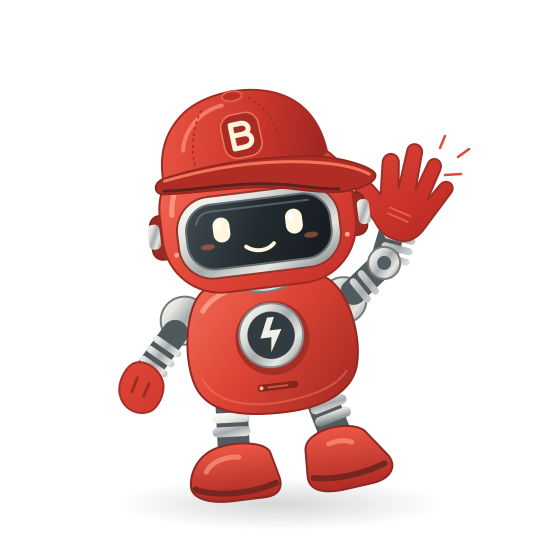

01 — BROWSER CONTROL
See it. Click it. Check it.
Navigate pages, inspect snapshots, fill forms, and follow the flow. Real interaction, powered by Playwright CLI.
Explore browser toolsGive your AI a real browser, not a best guess. Brandobot brings browser control and on-the-fly UI checks right into OpenCode.

LESS GUESSWORK. MORE BEEP BOOP.A friendly face.
A serious little toolkit.
01 / SMALL BOT, BIG TOOLKIT
Your agent writes the code.
Brandobot helps it see what happens next.
Navigate pages, inspect snapshots, fill forms, and follow the flow. Real interaction, powered by Playwright CLI.
Explore browser toolsEach OpenCode conversation gets its own browser state. Add labeled sessions to keep multiple workflows neatly apart.
Get to know sessionsRun a real Playwright Test spec in a temporary workspace. Get diagnostics and evidence without adding files to your project.
Meet on-the-fly testsThe right tool for the job. Guidance for browsing, opening links, reading pages, and running UI checks.
Keep the evidence. Timestamped screenshot and video filenames keep new captures from overwriting old ones.
02 / FROM PROMPT TO PROOF
No separate browser dashboard. Just ask your OpenCode agent to take a look, try a flow, or check that your UI does what it says on the tin.
A little more about the tools“Open my local app and check that the signup form works.”
Open the app. Get a fresh page snapshot.
browser → open · snapshotFill the fields. Click submit. Inspect the result.
browser → fill · click · snapshotRun a focused check and report what happened.
run_ui_test → Playwright TestTemporary checks give you local evidence. Save lasting regression tests with your project’s own test runner.
03 / A SMALL STEP FOR YOUR CONFIG
Your new browser buddy is just one plugin away.
Add Brandobot to your opencode.json.Already have plugins? Add it to your existing array.
Restart OpenCode.The plugin and Playwright CLI install on startup.
Ask your agent to open a page.Managed Chromium downloads when first needed.
{
"$schema": "https://opencode.ai/config.json",
"plugin": ["@bwanamaker/brandobot"]
}Requires OpenCode ≥1.18.25 and Node.js ^22.22.2, ^24.15.0, or ≥26.0.0. On Linux, browser system dependencies may need a separate install.